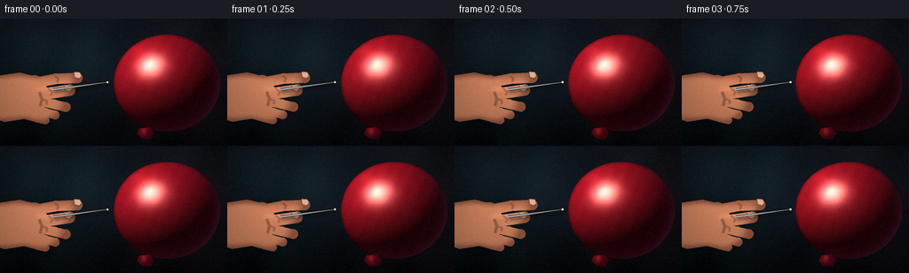
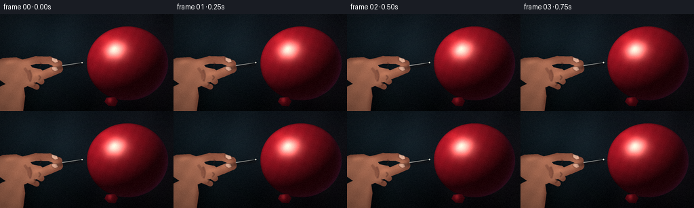
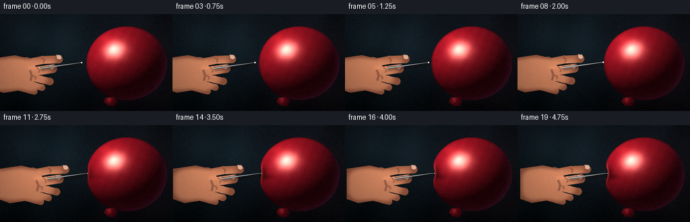
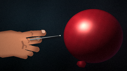
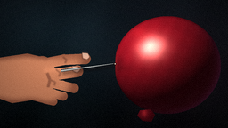
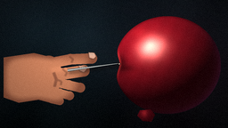
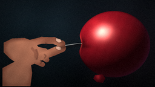
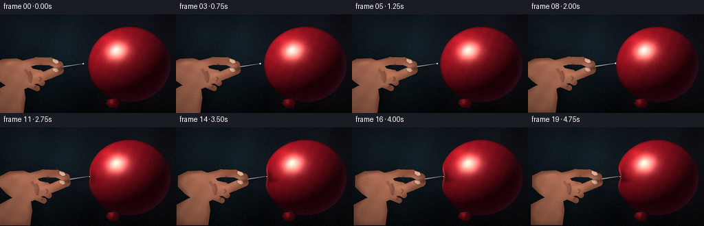
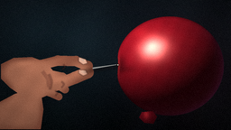

CODING AGENTS AS PIXEL WORLD MODELS
traex/DeepSeek-V4.1-Flash · phygen_021
点击播放 · 原生 RGB 像素
逐轮保存的候选
回放视频、检查图与代码变化。
每份候选均可单独播放。实际图片检查记录在下方工具轨迹中。
候选 01播放与检查图
点击播放 · 原生 RGB 像素


展开代码变化
--- 上一保存版本
+++ 本次保存版本
@@ -0,0 +1,455 @@
+from pathlib import Path
+import math
+
+import numpy as np
+from PIL import Image, ImageDraw, ImageFilter
+
+import artifact_io
+
+
+ROOT = Path(__file__).resolve().parent
+W, H = 256, 144
+FPS = 4
+FRAMES = 20
+SS = 4
+WW, WH = W * SS, H * SS
+
+
+def smoothstep(edge0, edge1, value):
+ x = np.clip((value - edge0) / (edge1 - edge0), 0.0, 1.0)
+ return x * x * (3.0 - 2.0 * x)
+
+
+def mix(a, b, t):
+ return a * (1.0 - t) + b * t
+
+
+def make_background():
+ yy, xx = np.mgrid[0:WH, 0:WW].astype(np.float32)
+ x = xx / SS
+ y = yy / SS
+ yn = y / H
+ xn = x / W
+
+ top = np.array([15.0, 21.0, 27.0], dtype=np.float32)
+ bottom = np.array([4.0, 7.0, 9.0], dtype=np.float32)
+ bg = mix(top[None, None, :], bottom[None, None, :], (yn ** 1.15)[..., None])
+
+ # A cool studio glow behind the hand and a warmer bounce behind the latex.
+ cool = np.exp(-(((x - 62.0) / 95.0) ** 2 + ((y - 48.0) / 74.0) ** 2))
+ bg += cool[..., None] * np.array([7.0, 15.0, 18.0], dtype=np.float32)
+ warm = np.exp(-(((x - 212.0) / 72.0) ** 2 + ((y - 82.0) / 70.0) ** 2))
+ bg += warm[..., None] * np.array([13.0, 4.0, 6.0], dtype=np.float32)
+
+ # Very soft bokeh, kept low contrast so the balloon remains the subject.
+ bokeh = Image.new("L", (WW, WH), 0)
+ bd = ImageDraw.Draw(bokeh)
+ for cx, cy, rx, ry, value in [
+ (43, 35, 15, 13, 30),
+ (71, 108, 20, 14, 20),
+ (224, 36, 14, 16, 16),
+ (237, 115, 23, 16, 12),
+ ]:
+ bd.ellipse(
+ ((cx - rx) * SS, (cy - ry) * SS, (cx + rx) * SS, (cy + ry) * SS),
+ fill=value,
+ )
+ bokeh = bokeh.filter(ImageFilter.GaussianBlur(10 * SS))
+ bg += (np.asarray(bokeh, dtype=np.float32) / 255.0)[..., None] * np.array(
+ [22.0, 28.0, 29.0], dtype=np.float32
+ )
+
+ # Broad, slow color variation prevents the backdrop from looking like flat vector art.
+ mottle = (
+ np.sin(x * 0.071 + y * 0.019)
+ + 0.65 * np.sin(x * 0.033 - y * 0.061 + 1.4)
+ + 0.45 * np.cos(x * 0.117 + y * 0.047)
+ )
+ bg += mottle[..., None] * np.array([1.5, 2.0, 2.2], dtype=np.float32)
+
+ # Darker lower-right field gives the balloon a visible edge without a hard outline.
+ bg *= (0.80 + 0.20 * np.exp(-(((x - 138.0) / 150.0) ** 2 + ((y - 70.0) / 112.0) ** 2)))[
+ ..., None
+ ]
+ return bg
+
+
+def render_balloon(x, y, tip_x, contact_y=71.8):
+ cx, cy = 188.0, 73.0
+ rx, ry = 60.0, 55.0
+ u = (x - cx) / rx
+ v = (y - cy) / ry
+ r2 = u * u + v * v
+
+ base_edge = cx - rx * np.sqrt(np.clip(1.0 - v * v, 0.0, 1.0))
+ base_contact = cx - rx * math.sqrt(max(0.0, 1.0 - ((contact_y - cy) / ry) ** 2))
+ penetration = max(0.0, tip_x - base_contact)
+ dimple_depth = 0.66 * penetration
+ contact_boundary = base_contact + dimple_depth
+ gaussian_y = np.exp(-0.5 * ((y - contact_y) / 8.0) ** 2)
+ left_edge = base_edge + dimple_depth * gaussian_y
+ mask = (r2 <= 1.0) & (x >= left_edge)
+
+ z = np.sqrt(np.clip(1.0 - r2, 0.0, 1.0))
+ nx = u / rx
+ ny = v / ry
+ nz = z / ((rx + ry) * 0.5)
+ norm = np.sqrt(nx * nx + ny * ny + nz * nz) + 1e-6
+ nx, ny, nz = nx / norm, ny / norm, nz / norm
+
+ light = np.array([-0.52, -0.67, 0.53], dtype=np.float32)
+ light /= np.linalg.norm(light)
+ view = np.array([0.0, 0.0, 1.0], dtype=np.float32)
+ half = light + view
+ half /= np.linalg.norm(half)
+
+ diffuse = np.clip(nx * light[0] + ny * light[1] + nz * light[2], 0.0, 1.0)
+ broad = np.clip(nx * half[0] + ny * half[1] + nz * half[2], 0.0, 1.0)
+ specular = broad ** 34
+ soft_spec = broad ** 8
+
+ base = np.array([158.0, 19.0, 34.0], dtype=np.float32)
+ deep = np.array([42.0, 5.0, 13.0], dtype=np.float32)
+ color = base[None, None, :] * (0.19 + 0.94 * diffuse[..., None])
+ color += deep[None, None, :] * ((1.0 - z) ** 2)[..., None] * 0.34
+ color += np.array([255.0, 218.0, 188.0], dtype=np.float32)[None, None, :] * (
+ specular[..., None] * 0.98
+ )
+ color += np.array([255.0, 148.0, 118.0], dtype=np.float32)[None, None, :] * (
+ soft_spec[..., None] * 0.09
+ )
+
+ # Cool rim light on the lower-right silhouette.
+ rim_dir = np.array([0.68, 0.34, 0.46], dtype=np.float32)
+ rim_dir /= np.linalg.norm(rim_dir)
+ rim = np.clip(nx * rim_dir[0] + ny * rim_dir[1] + nz * rim_dir[2], 0.0, 1.0)
+ rim = (1.0 - z) ** 3.2 * rim
+ color += rim[..., None] * np.array([34.0, 24.0, 54.0], dtype=np.float32)
+
+ # Latex grain and two broad glossy reflections.
+ grain = (
+ 1.0
+ + 0.020 * np.sin(x * 0.41 + y * 0.18)
+ + 0.014 * np.sin(x * 0.17 - y * 0.37 + 1.1)
+ )
+ color *= grain[..., None]
+ reflection_a = np.exp(-(((x - 155.0) / 15.0) ** 2 + ((y - 36.0) / 7.5) ** 2))
+ reflection_b = np.exp(-(((x - 169.0) / 4.5) ** 2 + ((y - 50.0) / 3.0) ** 2))
+ color += reflection_a[..., None] * np.array([24.0, 7.0, 5.0], dtype=np.float32)
+ color += reflection_b[..., None] * np.array([46.0, 16.0, 11.0], dtype=np.float32)
+
+ pressure = float(np.clip((tip_x - base_contact + 1.6) / 7.5, 0.0, 1.0))
+ dent_cx = contact_boundary + 1.8
+ dent = np.exp(
+ -(((x - dent_cx) / 7.2) ** 2 + ((y - contact_y) / 10.5) ** 2)
+ )
+ color *= (1.0 - 0.46 * dent * pressure)[..., None]
+
+ needle_shadow = np.exp(
+ -(((x - (dent_cx + 5.0)) / 10.0) ** 2 + ((y - (contact_y + 5.0)) / 3.6) ** 2)
+ )
+ color *= (1.0 - 0.25 * needle_shadow * pressure)[..., None]
+
+ dent_rim = np.exp(
+ -(((x - (dent_cx - 3.8)) / 2.0) ** 2 + ((y - (contact_y - 4.5)) / 7.0) ** 2)
+ )
+ color += dent_rim[..., None] * np.array([72.0, 31.0, 24.0], dtype=np.float32) * pressure
+
+ # A thin stretched highlight follows the deformed left contour.
+ edge_distance = x - left_edge
+ contour = np.exp(-((edge_distance - 1.15) / 1.15) ** 2)
+ contour *= np.exp(-0.5 * ((y - contact_y) / 10.5) ** 2) * pressure
+ color += contour[..., None] * np.array([72.0, 26.0, 21.0], dtype=np.float32)
+
+ color *= (0.68 + 0.32 * np.clip(z * 3.0, 0.0, 1.0))[..., None]
+ return mask, color, contact_boundary, contact_y
+
+
+def scaled_points(points):
+ return [(float(px) * SS, float(py) * SS) for px, py in points]
+
+
+def add_capsule(draw, points, width, fill=255):
+ pts = scaled_points(points)
+ radius = width * SS * 0.5
+ draw.line(pts, fill=fill, width=max(1, int(round(width * SS))), joint="curve")
+ for px, py in pts:
+ draw.ellipse((px - radius, py - radius, px + radius, py + radius), fill=fill)
+
+
+def render_hand_and_needle(dx, dy, tip_x, tip_y, press):
+ hand_mask = Image.new("L", (WW, WH), 0)
+ md = ImageDraw.Draw(hand_mask)
+
+ # Wrist and palm, deliberately cropped by the left edge.
+ palm = [
+ (-12, 66),
+ (22, 61),
+ (43, 66),
+ (56, 82),
+ (50, 101),
+ (31, 113),
+ (5, 117),
+ (-12, 111),
+ ]
+ md.polygon(scaled_points([(px + dx, py + dy) for px, py in palm]), fill=255)
+ md.ellipse(scaled_points([(24 + dx, 64 + dy), (53 + dx, 104 + dy)])[0] + scaled_points([(24 + dx, 64 + dy), (53 + dx, 104 + dy)])[1], fill=255)
+
+ add_capsule(
+ md,
+ [(42 + dx, 72 + dy), (63 + dx, 68 + dy), (87 + dx, 67 + dy)],
+ 12.0,
+ )
+ add_capsule(
+ md,
+ [(34 + dx, 85 + dy), (58 + dx, 84 + dy), (78 + dx, 81 + dy)],
+ 13.0,
+ )
+ add_capsule(
+ md,
+ [(44 + dx, 93 + dy), (61 + dx, 97 + dy), (74 + dx, 100 + dy)],
+ 11.0,
+ )
+ add_capsule(
+ md,
+ [(35 + dx, 102 + dy), (51 + dx, 106 + dy), (62 + dx, 109 + dy)],
+ 10.0,
+ )
+ add_capsule(
+ md,
+ [(27 + dx, 109 + dy), (42 + dx, 113 + dy), (51 + dx, 115 + dy)],
+ 9.0,
+ )
+
+ yy, xx = np.mgrid[0:WH, 0:WW].astype(np.float32)
+ x = xx / SS
+ y = yy / SS
+ m = np.asarray(hand_mask, dtype=np.float32) / 255.0
+ soft = np.asarray(hand_mask.filter(ImageFilter.GaussianBlur(7.0 * SS)), dtype=np.float32) / 255.0
+ edge = smoothstep(0.46, 0.88, soft)
+
+ key = 0.72 + 0.30 * np.exp(-(((x - 45.0) / 58.0) ** 2 + ((y - 42.0) / 64.0) ** 2))
+ key += 0.08 * np.exp(-(((x - 78.0) / 24.0) ** 2 + ((y - 75.0) / 20.0) ** 2))
+ base = np.array([205.0, 130.0, 94.0], dtype=np.float32)
+ shade = (0.54 + 0.53 * edge * key)[..., None]
+ hand_rgb = base[None, None, :] * shade
+ hand_rgb += (1.0 - edge)[..., None] * np.array([30.0, 11.0, 8.0], dtype=np.float32)
+ hand_rgb = np.clip(hand_rgb, 0.0, 255.0)
+ hand = np.dstack([hand_rgb, m * 255.0]).astype(np.uint8)
+ hand_img = Image.fromarray(hand, mode="RGBA")
+
+ # Soft top-light on the two gripping fingers.
+ shine_mask = Image.new("L", (WW, WH), 0)
+ sd = ImageDraw.Draw(shine_mask)
+ add_capsule(sd, [(47 + dx, 67 + dy), (66 + dx, 63 + dy), (82 + dx, 62 + dy)], 2.5)
+ add_capsule(sd, [(42 + dx, 80 + dy), (61 + dx, 79 + dy), (73 + dx, 77 + dy)], 2.2)
+ shine_mask = shine_mask.filter(ImageFilter.GaussianBlur(2.2 * SS))
+ shine = np.asarray(shine_mask, dtype=np.float32)[..., None] / 255.0
+ hand_arr = np.asarray(hand_img, dtype=np.float32)
+ hand_arr[..., :3] += shine * np.array([52.0, 35.0, 25.0], dtype=np.float32)
+ hand_arr[..., :3] = np.clip(hand_arr[..., :3], 0.0, 255.0)
+ hand_img = Image.fromarray(hand_arr.astype(np.uint8), mode="RGBA")
+
+ # Creases, nails, and a dark separation between the fingers.
+ detail = Image.new("RGBA", (WW, WH), (0, 0, 0, 0))
+ dd = ImageDraw.Draw(detail)
+ crease = (77, 37, 29, 92)
+ dd.line(scaled_points([(62 + dx, 65 + dy), (66 + dx, 68 + dy), (64 + dx, 72 + dy)]), fill=crease, width=2 * SS)
+ dd.line(scaled_points([(54 + dx, 79 + dy), (59 + dx, 83 + dy), (57 + dx, 87 + dy)]), fill=crease, width=2 * SS)
+ dd.line(scaled_points([(48 + dx, 91 + dy), (53 + dx, 93 + dy), (52 + dx, 97 + dy)]), fill=crease, width=2 * SS)
+ dd.line(scaled_points([(44 + dx, 83 + dy), (47 + dx, 91 + dy), (45 + dx, 99 + dy)]), fill=(70, 31, 27, 100), width=3 * SS)
+
+ nail_index = [
+ (83.0 + dx, 60.0 + dy),
+ (90.0 + dx, 60.5 + dy),
+ (92.0 + dx, 65.0 + dy),
+ (89.0 + dx, 68.0 + dy),
+ (84.0 + dx, 66.5 + dy),
+ ]
+ dd.polygon(scaled_points(nail_index), fill=(232, 177, 151, 255), outline=(101, 51, 41, 190))
+ nail_thumb = [
+ (72.0 + dx, 75.0 + dy),
+ (79.0 + dx, 75.5 + dy),
+ (81.5 + dx, 79.5 + dy),
+ (78.0 + dx, 83.0 + dy),
+ (73.0 + dx, 81.0 + dy),
+ ]
+ dd.polygon(scaled_points(nail_thumb), fill=(226, 169, 144, 255), outline=(101, 51, 41, 180))
+ dd.line(scaled_points([(85.0 + dx, 62.0 + dy), (89.0 + dx, 63.0 + dy)]), fill=(255, 229, 207, 160), width=2 * SS)
+ dd.line(scaled_points([(74.0 + dx, 77.0 + dy), (78.0 + dx, 78.0 + dy)]), fill=(255, 225, 204, 140), width=2 * SS)
+ detail = detail.filter(ImageFilter.GaussianBlur(0.45 * SS))
+ hand_img = Image.alpha_composite(hand_img, detail)
+
+ # Needle: a dark backing, a silver body, and a single narrow highlight.
+ base = np.array([60.0 + dx, 80.5 + dy], dtype=np.float32)
+ tip = np.array([tip_x, tip_y], dtype=np.float32)
+ vec = tip - base
+ length = float(np.linalg.norm(vec))
+ unit = vec / max(length, 1e-6)
+ perp = np.array([-unit[1], unit[0]], dtype=np.float32)
+
+ shadow_layer = Image.new("RGBA", (WW, WH), (0, 0, 0, 0))
+ shd = ImageDraw.Draw(shadow_layer)
+ shadow_base = base + np.array([1.2, 2.1], dtype=np.float32)
+ shadow_tip = tip + np.array([1.2, 2.1], dtype=np.float32)
+ shd.line(
+ scaled_points([tuple(shadow_base), tuple(shadow_tip)]),
+ fill=(18, 9, 9, 90),
+ width=int(5.0 * SS),
+ )
+ shadow_layer = shadow_layer.filter(ImageFilter.GaussianBlur(1.2 * SS))
+ hand_img = Image.alpha_composite(hand_img, shadow_layer)
+
+ needle_layer = Image.new("RGBA", (WW, WH), (0, 0, 0, 0))
+ nd = ImageDraw.Draw(needle_layer)
+
+ def polygon_for(width):
+ return scaled_points(
+ [
+ tuple(base + perp * width),
+ tuple(tip + perp * 0.15),
+ tuple(tip - perp * 0.15),
+ tuple(base - perp * width),
+ ]
+ )
+
+ nd.polygon(polygon_for(1.55), fill=(42, 46, 48, 255))
+ nd.polygon(polygon_for(0.92), fill=(167, 171, 170, 255))
+ nd.line(
+ scaled_points([tuple(base - perp * 0.30), tuple(tip - perp * 0.04)]),
+ fill=(241, 241, 229, 235),
+ width=max(1, int(0.55 * SS)),
+ )
+ nd.ellipse(
+ scaled_points([(tip_x - 1.0, tip_y - 1.0), (tip_x + 1.2, tip_y + 1.2)])[0]
+ + scaled_points([(tip_x - 1.0, tip_y - 1.0), (tip_x + 1.2, tip_y + 1.2)])[1],
+ fill=(255, 250, 230, 255),
+ )
+ hand_img = Image.alpha_composite(hand_img, needle_layer)
+
+ return hand_img, hand_mask
+
+
+def add_knot(image, dx=0.0, dy=0.0):
+ knot_mask = Image.new("L", (WW, WH), 0)
+ kd = ImageDraw.Draw(knot_mask)
+ knot_poly = [
+ (157, 124),
+ (169, 123),
+ (174, 129),
+ (170, 137),
+ (160, 136),
+ (154, 130),
+ ]
+ kd.polygon(scaled_points([(px + dx, py + dy) for px, py in knot_poly]), fill=255)
+ kd.ellipse(
+ scaled_points([(160 + dx, 127 + dy), (171 + dx, 135 + dy)])[0]
+ + scaled_points([(160 + dx, 127 + dy), (171 + dx, 135 + dy)])[1],
+ fill=255,
+ )
+
+ yy, xx = np.mgrid[0:WH, 0:WW].astype(np.float32)
+ x = xx / SS
+ y = yy / SS
+ m = np.asarray(knot_mask, dtype=np.float32) / 255.0
+ shade = np.clip(0.40 + 0.50 * np.exp(-(((x - 160.0) / 12.0) ** 2 + ((y - 126.0) / 9.0) ** 2)), 0.0, 1.0)
+ rgb = np.array([104.0, 11.0, 24.0], dtype=np.float32)[None, None, :] * shade[..., None]
+ rgb += np.exp(-(((x - 162.0) / 3.0) ** 2 + ((y - 127.0) / 4.5) ** 2))[..., None] * np.array(
+ [58.0, 19.0, 16.0], dtype=np.float32
+ )
+ knot = np.dstack([np.clip(rgb, 0, 255), m * 255.0]).astype(np.uint8)
+ return Image.alpha_composite(image, Image.fromarray(knot, mode="RGBA"))
+
+
+def render_frame(index):
+ t = index / (FRAMES - 1)
+ # Slight initial motion plus a smooth pressure ramp.
+ ease = 0.14 * t + 0.86 * (t * t * (3.0 - 2.0 * t))
+ dx = 16.0 * ease + 0.20 * math.sin(2.0 * math.pi * 2.2 * t) * math.sin(math.pi * t)
+ dy = -1.35 * ease + 0.10 * math.sin(2.0 * math.pi * 1.7 * t) * math.sin(math.pi * t)
+ tip_x = 121.0 + dx
+ tip_y = 72.0 + dy
+
+ contact_y = 71.8
+ base_contact = 188.0 - 60.0 * math.sqrt(
+ max(0.0, 1.0 - ((contact_y - 73.0) / 55.0) ** 2)
+ )
+ press = float(np.clip((tip_x - base_contact + 1.6) / 7.5, 0.0, 1.0))
+
+ bg = make_background()
+ yy, xx = np.mgrid[0:WH, 0:WW].astype(np.float32)
+ x = xx / SS
+ y = yy / SS
+
+ # Soft shadow around the hand and the right edge of the balloon.
+ hand_img, hand_mask = render_hand_and_needle(dx, dy, tip_x, tip_y, press)
+ hand_shadow_mask = hand_mask.filter(ImageFilter.GaussianBlur(12.0 * SS))
+ hs = np.asarray(hand_shadow_mask, dtype=np.float32)[..., None] / 255.0
+ bg *= 1.0 - 0.18 * hs
+ balloon_shadow = np.exp(-(((x - 207.0) / 64.0) ** 2 + ((y - 121.0) / 28.0) ** 2))
+ bg *= 1.0 - 0.12 * balloon_shadow[..., None]
+
+ hand_arr = np.asarray(hand_img, dtype=np.float32)
+ alpha = hand_arr[..., 3:4] / 255.0
+ bg = bg * (1.0 - alpha) + hand_arr[..., :3] * alpha
+
+ balloon_mask, balloon_rgb, contact_boundary, contact_y = render_balloon(x, y, tip_x, contact_y)
+ bm = balloon_mask.astype(np.float32)[..., None]
+ bg = bg * (1.0 - bm) + balloon_rgb * bm
+
+ # A tiny, physically grounded knot at the bottom of the balloon.
+ bg_img = Image.fromarray(np.clip(bg, 0.0, 255.0).astype(np.uint8), mode="RGB").convert("RGBA")
+ bg_img = add_knot(bg_img)
+
+ # Contact glint appears only as the tip reaches the latex.
+ contact_alpha = float(smoothstep(0.08, 0.42, press))
+ if contact_alpha > 0.01:
+ contact = Image.new("RGBA", (WW, WH), (0, 0, 0, 0))
+ cd = ImageDraw.Draw(contact)
+ cxp, cyp = contact_boundary, contact_y
+ cd.ellipse(
+ scaled_points([(cxp - 1.5, cyp - 1.1), (cxp + 1.4, cyp + 1.2)])[0]
+ + scaled_points([(cxp - 1.5, cyp - 1.1), (cxp + 1.4, cyp + 1.2)])[1],
+ fill=(28, 7, 9, int(190 * contact_alpha)),
+ )
+ cd.ellipse(
+ scaled_points([(cxp - 0.65, cyp - 0.55), (cxp + 0.75, cyp + 0.65)])[0]
+ + scaled_points([(cxp - 0.65, cyp - 0.55), (cxp + 0.75, cyp + 0.65)])[1],
+ fill=(255, 246, 219, int(230 * contact_alpha)),
+ )
+ bg_img = Image.alpha_composite(bg_img, contact)
+
+ frame = np.asarray(bg_img.convert("RGB"), dtype=np.float32)
+
+ # Subtle bloom on the needle/latex highlights.
+ hi = np.clip((frame.max(axis=2) - 205.0) / 50.0, 0.0, 1.0)
+ hi_img = Image.fromarray((hi * 255.0).astype(np.uint8), mode="L").filter(
+ ImageFilter.GaussianBlur(8.0 * SS)
+ )
+ hi_blur = np.asarray(hi_img, dtype=np.float32)[..., None] / 255.0
+ frame += hi_blur * np.array([20.0, 12.0, 8.0], dtype=np.float32)
+
+ # Optical vignette and restrained film grain.
+ nx = (x - W * 0.5) / (W * 0.5)
+ ny = (y - H * 0.5) / (H * 0.5)
+ vignette = np.clip(1.0 - 0.16 * (nx * nx + 0.9 * ny * ny), 0.72, 1.0)
+ frame *= vignette[..., None]
+
+ frame = np.clip(frame, 0.0, 255.0).astype(np.uint8)
+ out = Image.fromarray(frame, mode="RGB").resize((W, H), Image.Resampling.LANCZOS)
+ out_arr = np.asarray(out, dtype=np.float32)
+ rng = np.random.default_rng(9200 + index)
+ grain = rng.normal(0.0, 1.8, (H, W, 1)).astype(np.float32)
+ out_arr += grain
+ out_arr = np.clip(out_arr, 0.0, 255.0).astype(np.uint8)
+ return out_arr
+
+
+def main():
+ frames = np.stack([render_frame(i) for i in range(FRAMES)], axis=0)
+ artifact_io.save(frames, ROOT)
+ print(f"saved {frames.shape} to {ROOT}")
+
+
+if __name__ == "__main__":
+ main()
候选 02播放与检查图
点击播放 · 原生 RGB 像素


展开代码变化
--- 上一保存版本
+++ 本次保存版本
@@ -181,44 +181,69 @@
hand_mask = Image.new("L", (WW, WH), 0)
md = ImageDraw.Draw(hand_mask)
- # Wrist and palm, deliberately cropped by the left edge.
+ # Wrist and palm are cropped by the frame so the composition stays on the gesture.
+ wrist = [
+ (-12, 114),
+ (5, 105),
+ (23, 99),
+ (34, 102),
+ (37, 122),
+ (34, 144),
+ (-12, 144),
+ ]
+ md.polygon(scaled_points([(px + dx, py + dy) for px, py in wrist]), fill=255)
palm = [
- (-12, 66),
- (22, 61),
- (43, 66),
- (56, 82),
- (50, 101),
- (31, 113),
- (5, 117),
- (-12, 111),
+ (-10, 72),
+ (4, 65),
+ (24, 64),
+ (40, 70),
+ (49, 81),
+ (51, 94),
+ (45, 105),
+ (31, 111),
+ (13, 107),
+ (0, 98),
+ (-10, 88),
]
md.polygon(scaled_points([(px + dx, py + dy) for px, py in palm]), fill=255)
- md.ellipse(scaled_points([(24 + dx, 64 + dy), (53 + dx, 104 + dy)])[0] + scaled_points([(24 + dx, 64 + dy), (53 + dx, 104 + dy)])[1], fill=255)
-
+
+ # Extended index finger and opposing thumb form a readable pinch.
add_capsule(
md,
- [(42 + dx, 72 + dy), (63 + dx, 68 + dy), (87 + dx, 67 + dy)],
- 12.0,
+ [
+ (33 + dx, 73 + dy),
+ (53 + dx, 68 + dy),
+ (73 + dx, 68.5 + dy),
+ (86 + dx, 74 + dy),
+ ],
+ 11.5,
)
add_capsule(
md,
- [(34 + dx, 85 + dy), (58 + dx, 84 + dy), (78 + dx, 81 + dy)],
- 13.0,
- )
+ [
+ (37 + dx, 99 + dy),
+ (54 + dx, 94 + dy),
+ (72 + dx, 87 + dy),
+ (86 + dx, 81 + dy),
+ ],
+ 13.5,
+ )
+
+ # Three curled fingers make the lower part of the palm, not a second extended finger.
add_capsule(
md,
- [(44 + dx, 93 + dy), (61 + dx, 97 + dy), (74 + dx, 100 + dy)],
- 11.0,
+ [(44 + dx, 83 + dy), (58 + dx, 86 + dy), (66 + dx, 91 + dy)],
+ 9.5,
)
add_capsule(
md,
- [(35 + dx, 102 + dy), (51 + dx, 106 + dy), (62 + dx, 109 + dy)],
- 10.0,
+ [(41 + dx, 92 + dy), (54 + dx, 96 + dy), (61 + dx, 100 + dy)],
+ 8.7,
)
add_capsule(
md,
- [(27 + dx, 109 + dy), (42 + dx, 113 + dy), (51 + dx, 115 + dy)],
- 9.0,
+ [(36 + dx, 101 + dy), (47 + dx, 105 + dy), (54 + dx, 108 + dy)],
+ 8.0,
)
yy, xx = np.mgrid[0:WH, 0:WW].astype(np.float32)
@@ -228,60 +253,68 @@
soft = np.asarray(hand_mask.filter(ImageFilter.GaussianBlur(7.0 * SS)), dtype=np.float32) / 255.0
edge = smoothstep(0.46, 0.88, soft)
- key = 0.72 + 0.30 * np.exp(-(((x - 45.0) / 58.0) ** 2 + ((y - 42.0) / 64.0) ** 2))
- key += 0.08 * np.exp(-(((x - 78.0) / 24.0) ** 2 + ((y - 75.0) / 20.0) ** 2))
- base = np.array([205.0, 130.0, 94.0], dtype=np.float32)
- shade = (0.54 + 0.53 * edge * key)[..., None]
+ key = 0.56 + 0.34 * np.exp(-(((x - 42.0) / 58.0) ** 2 + ((y - 58.0) / 70.0) ** 2))
+ key += 0.13 * np.exp(-(((x - 75.0) / 25.0) ** 2 + ((y - 78.0) / 18.0) ** 2))
+ key *= 0.92 + 0.08 * np.clip((96.0 - y) / 42.0, 0.0, 1.0)
+ base = np.array([198.0, 126.0, 97.0], dtype=np.float32)
+ shade = (0.50 + 0.51 * edge * key)[..., None]
hand_rgb = base[None, None, :] * shade
hand_rgb += (1.0 - edge)[..., None] * np.array([30.0, 11.0, 8.0], dtype=np.float32)
+ skin_mottle = (
+ np.sin(x * 0.24 + y * 0.16)
+ + 0.55 * np.sin(x * 0.11 - y * 0.29 + 0.8)
+ )
+ hand_rgb *= (1.0 + 0.025 * skin_mottle)[..., None]
hand_rgb = np.clip(hand_rgb, 0.0, 255.0)
hand = np.dstack([hand_rgb, m * 255.0]).astype(np.uint8)
- hand_img = Image.fromarray(hand, mode="RGBA")
+ hand_img = Image.fromarray(hand)
# Soft top-light on the two gripping fingers.
shine_mask = Image.new("L", (WW, WH), 0)
sd = ImageDraw.Draw(shine_mask)
- add_capsule(sd, [(47 + dx, 67 + dy), (66 + dx, 63 + dy), (82 + dx, 62 + dy)], 2.5)
- add_capsule(sd, [(42 + dx, 80 + dy), (61 + dx, 79 + dy), (73 + dx, 77 + dy)], 2.2)
+ add_capsule(sd, [(43 + dx, 68 + dy), (62 + dx, 63.5 + dy), (79 + dx, 64.5 + dy)], 2.3)
+ add_capsule(sd, [(47 + dx, 91 + dy), (62 + dx, 87 + dy), (77 + dx, 81 + dy)], 2.1)
+ add_capsule(sd, [(10 + dx, 72 + dy), (28 + dx, 66.5 + dy), (41 + dx, 70 + dy)], 2.0)
shine_mask = shine_mask.filter(ImageFilter.GaussianBlur(2.2 * SS))
shine = np.asarray(shine_mask, dtype=np.float32)[..., None] / 255.0
hand_arr = np.asarray(hand_img, dtype=np.float32)
hand_arr[..., :3] += shine * np.array([52.0, 35.0, 25.0], dtype=np.float32)
hand_arr[..., :3] = np.clip(hand_arr[..., :3], 0.0, 255.0)
- hand_img = Image.fromarray(hand_arr.astype(np.uint8), mode="RGBA")
+ hand_img = Image.fromarray(hand_arr.astype(np.uint8))
# Creases, nails, and a dark separation between the fingers.
detail = Image.new("RGBA", (WW, WH), (0, 0, 0, 0))
dd = ImageDraw.Draw(detail)
- crease = (77, 37, 29, 92)
- dd.line(scaled_points([(62 + dx, 65 + dy), (66 + dx, 68 + dy), (64 + dx, 72 + dy)]), fill=crease, width=2 * SS)
- dd.line(scaled_points([(54 + dx, 79 + dy), (59 + dx, 83 + dy), (57 + dx, 87 + dy)]), fill=crease, width=2 * SS)
- dd.line(scaled_points([(48 + dx, 91 + dy), (53 + dx, 93 + dy), (52 + dx, 97 + dy)]), fill=crease, width=2 * SS)
- dd.line(scaled_points([(44 + dx, 83 + dy), (47 + dx, 91 + dy), (45 + dx, 99 + dy)]), fill=(70, 31, 27, 100), width=3 * SS)
+ crease = (73, 34, 29, 104)
+ dd.line(scaled_points([(59 + dx, 72 + dy), (61 + dx, 75 + dy), (58 + dx, 78 + dy)]), fill=crease, width=2 * SS)
+ dd.line(scaled_points([(57 + dx, 91 + dy), (60 + dx, 94 + dy), (57 + dx, 98 + dy)]), fill=crease, width=2 * SS)
+ dd.line(scaled_points([(50 + dx, 101 + dy), (53 + dx, 104 + dy), (50 + dx, 107 + dy)]), fill=crease, width=2 * SS)
+ dd.line(scaled_points([(43 + dx, 83 + dy), (46 + dx, 91 + dy), (44 + dx, 100 + dy)]), fill=(70, 31, 27, 100), width=3 * SS)
+ dd.line(scaled_points([(36 + dx, 80 + dy), (42 + dx, 88 + dy), (43 + dx, 97 + dy)]), fill=(86, 40, 33, 72), width=4 * SS)
nail_index = [
- (83.0 + dx, 60.0 + dy),
- (90.0 + dx, 60.5 + dy),
- (92.0 + dx, 65.0 + dy),
- (89.0 + dx, 68.0 + dy),
+ (76.0 + dx, 64.0 + dy),
(84.0 + dx, 66.5 + dy),
+ (86.0 + dx, 71.0 + dy),
+ (81.0 + dx, 72.5 + dy),
+ (76.0 + dx, 69.0 + dy),
]
dd.polygon(scaled_points(nail_index), fill=(232, 177, 151, 255), outline=(101, 51, 41, 190))
nail_thumb = [
- (72.0 + dx, 75.0 + dy),
- (79.0 + dx, 75.5 + dy),
- (81.5 + dx, 79.5 + dy),
- (78.0 + dx, 83.0 + dy),
- (73.0 + dx, 81.0 + dy),
+ (76.0 + dx, 78.0 + dy),
+ (84.0 + dx, 78.5 + dy),
+ (86.0 + dx, 83.0 + dy),
+ (81.0 + dx, 85.0 + dy),
+ (76.0 + dx, 82.0 + dy),
]
dd.polygon(scaled_points(nail_thumb), fill=(226, 169, 144, 255), outline=(101, 51, 41, 180))
- dd.line(scaled_points([(85.0 + dx, 62.0 + dy), (89.0 + dx, 63.0 + dy)]), fill=(255, 229, 207, 160), width=2 * SS)
- dd.line(scaled_points([(74.0 + dx, 77.0 + dy), (78.0 + dx, 78.0 + dy)]), fill=(255, 225, 204, 140), width=2 * SS)
+ dd.line(scaled_points([(78.0 + dx, 66.0 + dy), (82.0 + dx, 68.0 + dy)]), fill=(255, 229, 207, 160), width=2 * SS)
+ dd.line(scaled_points([(79.0 + dx, 80.0 + dy), (83.0 + dx, 81.0 + dy)]), fill=(255, 225, 204, 140), width=2 * SS)
detail = detail.filter(ImageFilter.GaussianBlur(0.45 * SS))
hand_img = Image.alpha_composite(hand_img, detail)
# Needle: a dark backing, a silver body, and a single narrow highlight.
- base = np.array([60.0 + dx, 80.5 + dy], dtype=np.float32)
+ base = np.array([82.0 + dx, 78.0 + dy], dtype=np.float32)
tip = np.array([tip_x, tip_y], dtype=np.float32)
vec = tip - base
length = float(np.linalg.norm(vec))
@@ -325,7 +358,8 @@
+ scaled_points([(tip_x - 1.0, tip_y - 1.0), (tip_x + 1.2, tip_y + 1.2)])[1],
fill=(255, 250, 230, 255),
)
- hand_img = Image.alpha_composite(hand_img, needle_layer)
+ # The finger tips cover the needle base, making the pinch physically legible.
+ hand_img = Image.alpha_composite(needle_layer, hand_img)
return hand_img, hand_mask
可观测工具轨迹
实际执行的命令与返回图片。
命令 1exit 0
/bin/bash -c "pwd && rg --files -g 'prompt.txt' -g 'GENERATION_RULES.md' -g 'task_spec.json' -g '"'!node_modules'"' -g '"'!vendor'"'"
命令 2exit 0
/bin/bash -c "ls -la && find . -maxdepth 2 -type f | sed 's#"'^./##'"' | sort | head -200"
命令 3exit 0
/bin/bash -c 'cat prompt.txt'
命令 4exit 0
/bin/bash -c 'cat GENERATION_RULES.md'
命令 5exit 0
/bin/bash -c 'cat task_spec.json'
命令 6exit 0
/bin/bash -c "sed -n '1,240p' artifact_io.py"
命令 7exit 0
/bin/bash -c 'python generate.py'
命令 8exit 0
/bin/bash -c "python - <<'PY'
from PIL import Image
im=Image.open('frames/19.png')
print(im.size)
PY"命令 9exit 0
/bin/bash -c 'python generate.py'
命令 10exit 0
/bin/bash -c 'ls -lh generate.py pixels.npz index.html inspection.png transition_check.png frames/00.png frames/19.png'
命令 11exit 0
/bin/bash -c "python - <<'PY'
import json, numpy as np
from pathlib import Path
p=np.load('pixels.npz')['pixels']
print('pixels', p.shape, p.dtype, 'minmax', int(p.min()), int(p.max()))
a=p.astype(np.int16)
print('frame diff mean range', float(np.abs(a[1:]-a[:-1]).mean()), float(np.abs(a[1:]-a[:-1]).max()))
print('per-frame mean', [round(float(a[i].mean()),2) for i in (0,5,10,15,19)])
s=json.loads(Path('task_spec.json').read_text())
print('spec', s)
PY"命令 12exit 0
/bin/bash -c "python - <<'PY'
from PIL import Image
import numpy as np
for idx in (0, 6, 10, 14, 19):
a=np.asarray(Image.open(f'frames/{idx:02d}.png')).astype(int)
# needle pixels are neutral bright; report a compact crop statistic for contact inspection
crop=a[60:85, 110:165]
print(idx, 'mean', np.round(a.mean((0,1)),1), 'needle-crop bright', int((crop.mean(2)>185).sum()))
PY"视觉工具实际返回图片 1

视觉工具实际返回图片 2

视觉工具实际返回图片 3

视觉工具实际返回图片 4

视觉工具实际返回图片 5

视觉工具实际返回图片 6

视觉工具实际返回图片 7

视觉工具实际返回图片 8

保存候选 2 份；完成命令 12 次；可验证图片返回 8 张。原始 API 响应与完整日志保留在本地。